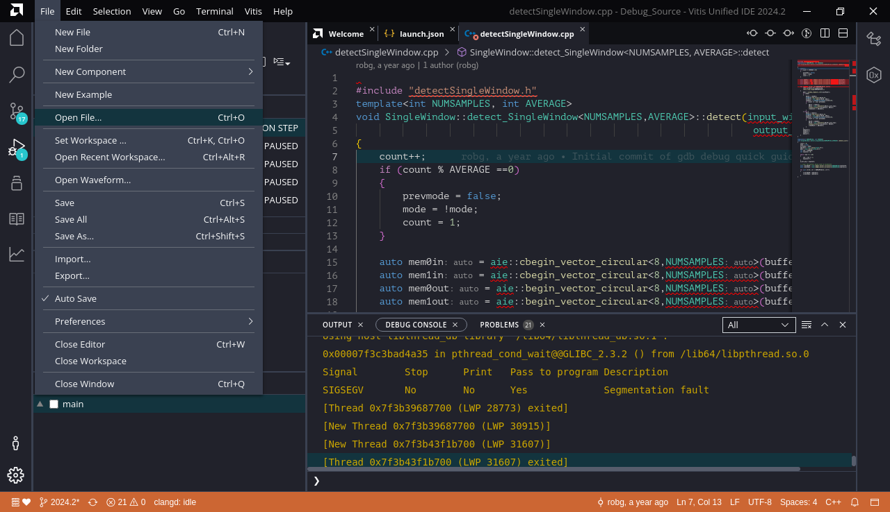
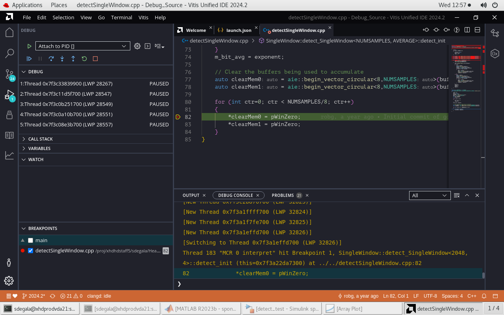

Debugging C/C++ Source Code
This quick guide will show how to debug C/C++ source code that has been imported into a Vitis Model Composer model. We will demonstrate with an AI Engine kernel, but the same process can be followed to debug imported HLS functions or kernels as well.
Testbench Model and AI Engine Code
- Open the model detect_test.slx.

This model is a simple unit testbench for an energy detection algorithm that has been implemented as an AI Engine kernel.
- Double-click on the peak_detect subsystem to open it.

The AI Engine kernel has been brought into Vitis Model Composer using the AIE Class Kernel block. The kernel source code can be viewed in the source files detectSingleWindow.cpp and detectSingleWindow.h.
Now we will simulate the model to see whether the AI Engine kernel produces the desired behavior.
- On the Simulink toolstrip, click
 .
.
This will initialize the simulation and pause it at the first time step (t=0). The Array Plot shows the output of the AI Engine kernel.

- Click several times to move to the next time step of the simulation.
On some of the execution time steps, the AI Engine kernel will appear to produce garbage samples like this:

- Continue clicking several times.
Eventually after advancing several more time steps, the AI Engine kernel output will settle into a steady state that looks like below.

This is the desired output of the energy detection algorithm.
The odd transient behavior at the beginning of the algorithm execution is what we would like to debug.
- Stop the model.
Debugging the Code using Vitis
- Run
vmcLaunchVitisDebuggerfrom the model directory on the MATLAB Command Window and make sure to opendetect_test.slxmodel before running this command.

vmcLaunchVitisDebugger creates the required _ide/launch.json file in the current directory and launches AMD Vitis Unified IDE for debugging AI Engine kernel code.
- Click on the Debug icon.

- Click on the Settings icon next to Attach to PID to open
launch.jsonfile.

- Type
feature getpidin the MATLAB command window to display process ID and make sure the process ID listed in thelaunch.jsonfile is also same.

- Click on Start Debugging icon as shown below to attach to PID.


- After attaching to PID, open detectSingleWindow.cpp file to set a break point as shown below.


Run the
detect_test.slxmodel after setting break point.Break point hitting at line 82 as shown in debug console.

Fix The Bug
We learned in the previous section that there is a bug in our code that zeros out the 2 accumulator buffers before execution begins. We can fix this error by advancing the memory pointer location on each loop iteration.
- Add 2 lines to the loop inside
detectSingleWindow.cppto increment the pointers as follows:

Save
detectSingleWindow.cpp.Run the
detect_testmodel.
The AI Engine kernel is rebuilt with the source code changes. We no longer see the transient behavior in the output signal at the beginning of execution.
Conclusion
In this example, you saw how to use gdb to debug source code that is running in Vitis Model Composer. This approach can be used with AI Engine and HLS C/C++ code.
Copyright 2024 Advanced Micro Devices, Inc.
Licensed under the Apache License, Version 2.0 (the "License");
you may not use this file except in compliance with the License.
You may obtain a copy of the License at
http://www.apache.org/licenses/LICENSE-2.0
Unless required by applicable law or agreed to in writing, software
distributed under the License is distributed on an "AS IS" BASIS,
WITHOUT WARRANTIES OR CONDITIONS OF ANY KIND, either express or implied.
See the License for the specific language governing permissions and
limitations under the License.